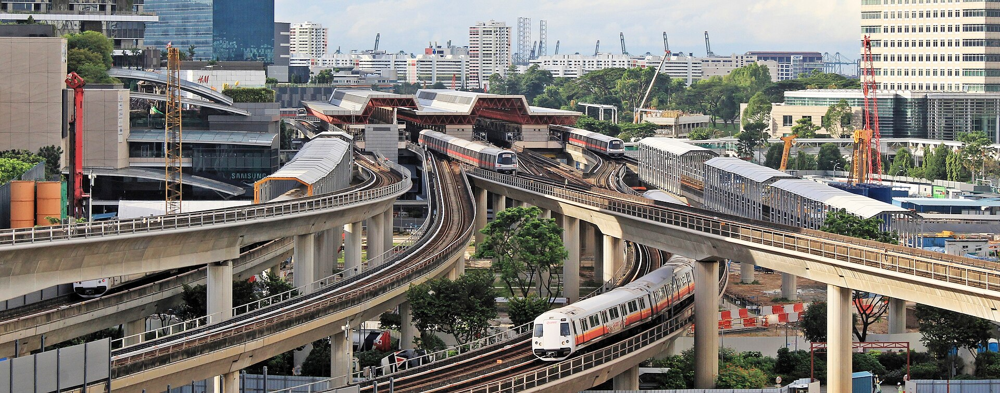
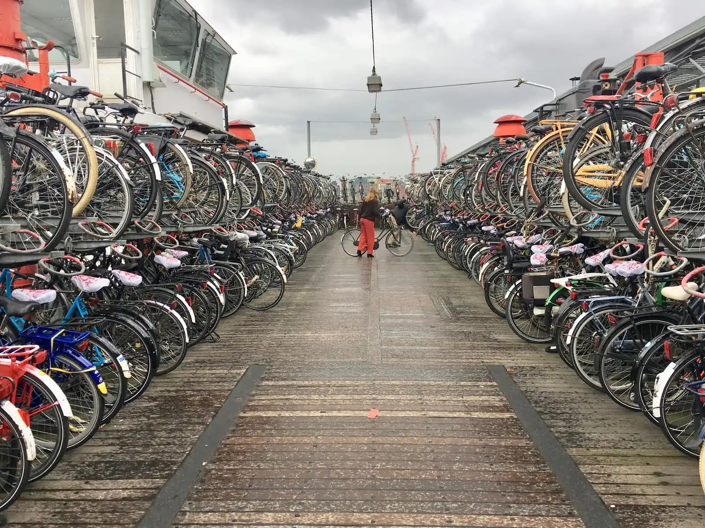
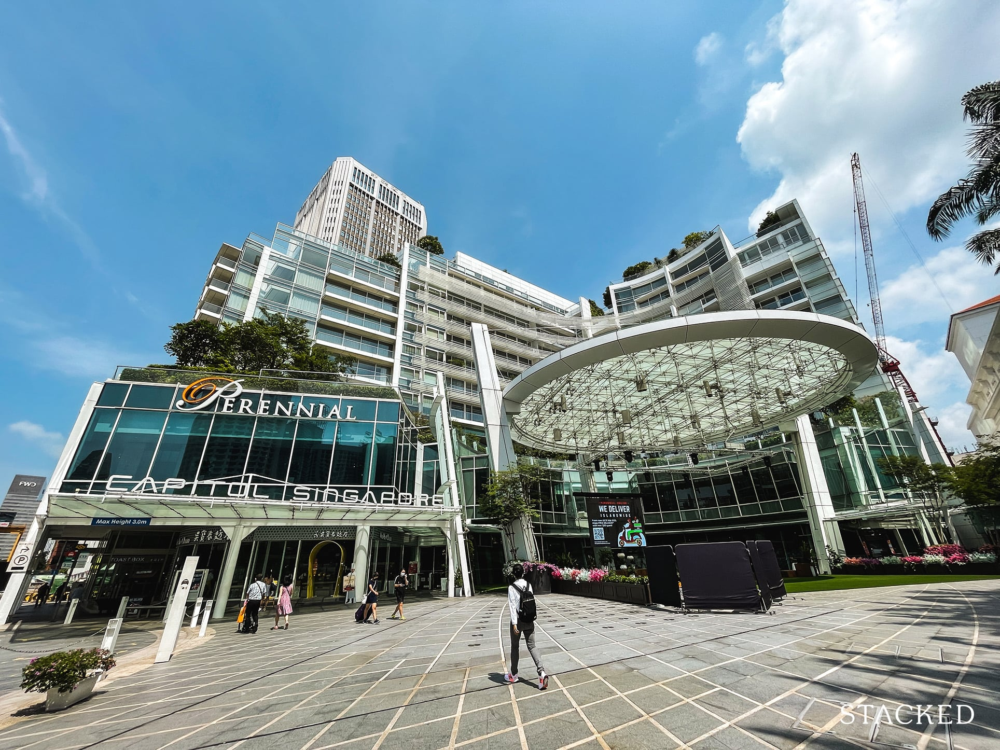
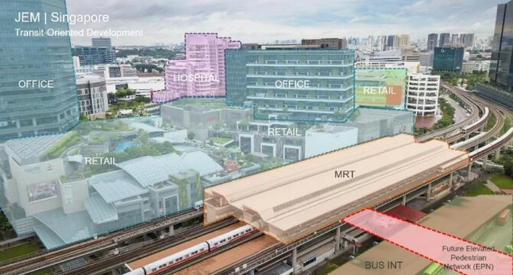
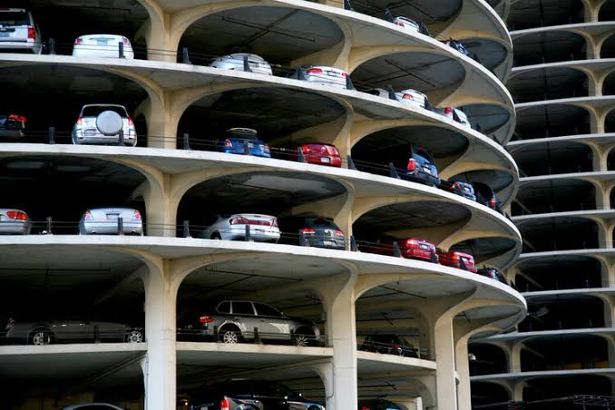
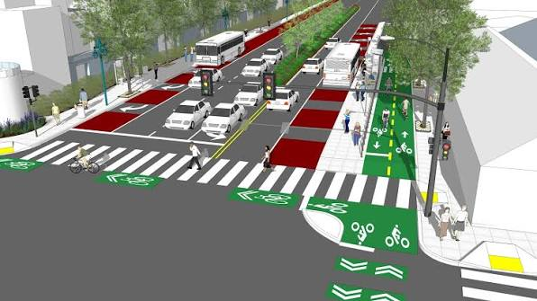
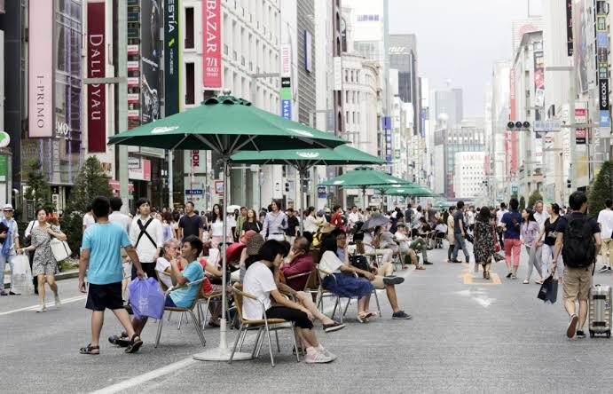

Dari Teori
Menjadi Kenyataan
Setiap aplikasi berikut adalah solusi yang telah berhasil diterapkan di kota-kota di seluruh dunia. Implementasinya sederhana — yang dibutuhkan hanyalah kemauan politik dan perencanaan yang tepat.
Transportasi Umum
Transportasi umum adalah salah satu alternatif untuk mobil yang paling efektif — namun ada syarat penting: transportasi umum harus diprioritaskan agar lebih cepat dan lebih efektif dibanding mobil. Tanpa insentif waktu, masyarakat tidak akan beralih dari mobil pribadi ke angkutan umum.

Infrastruktur Bersepeda yang Baik
Sepeda adalah salah satu moda transportasi paling ramah lingkungan dan paling efektif untuk perjalanan singkat. Namun, infrastrukturnya harus terpisah dari jalur mobil agar aman — bukan sekadar marka di tepi jalan. Fasilitas pendukung seperti parkir sepeda juga esensial.

Infrastruktur Pejalan Kaki yang Baik
Secara efisiensi ruang, pejalan kaki menggunakan ruang terendah dibanding moda lainnya. Untuk itu penting sekali infrastruktur pejalan kaki dibuat berkualitas — bukan sekadar ada trotoar sempit.

Mixed-Use Development
Dalam lingkungan mixed-use, semua tipe bangunan — hunian, komersial, perkantoran, dan fasilitas publik — berada di satu kawasan yang sama yang terintegrasi secara vertikal maupun horizontal.

Transit-Oriented Development
Transit-Oriented Development (TOD) adalah konsep tata kota yang memfokuskan pembangunan perumahan dan area komersial di sekitar titik-titik transportasi umum seperti stasiun kereta atau halte bus utama.

Penghilangan Ketentuan Parkir Minimum
Aturan tempat parkir minimum adalah salah satu pemborosan ruang terbesar dalam kota car-centric, memaksa pengembang membangun lahan parkir luas yang seringkali dibiarkan kosong melompong.

Road Diet
Road Diet adalah inisiatif pengalihan ruang jalan dari kendaraan bermotor pribadi ke penggunaan lain yang lebih inklusif: jalur khusus bus, jalur sepeda terlindungi, pelebaran trotoar, dan penambahan median hijau.

Zona Pedestrian
Zona Pedestrian adalah kawasan atau jalan di mana kendaraan bermotor dilarang masuk sepenuhnya — dikembalikan seratus persen untuk pejalan kaki. Agar tidak sepi, zona ini harus berlokasi dekat dengan akses transportasi umum.

Kota yang Lebih Baik
Dimulai dari Pilihan
Setiap solusi di atas bukan sesuatu yang asing atau tidak mungkin — melainkan pilihan perencanaan yang sudah terbukti berhasil. Yang dibutuhkan hanyalah keberanian untuk memprioritaskan manusia di atas kendaraan bermotor.
Kembali ke Beranda ↑